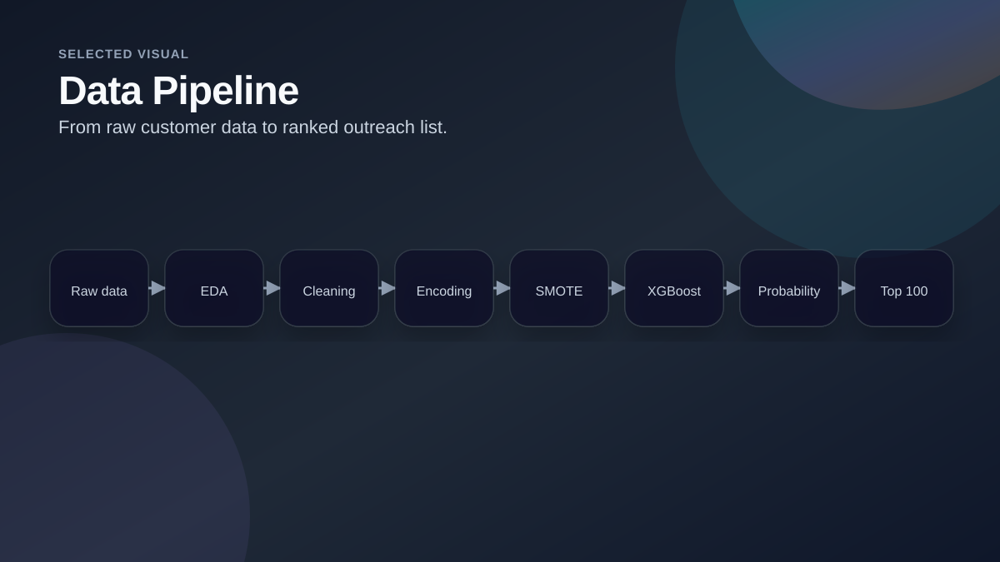
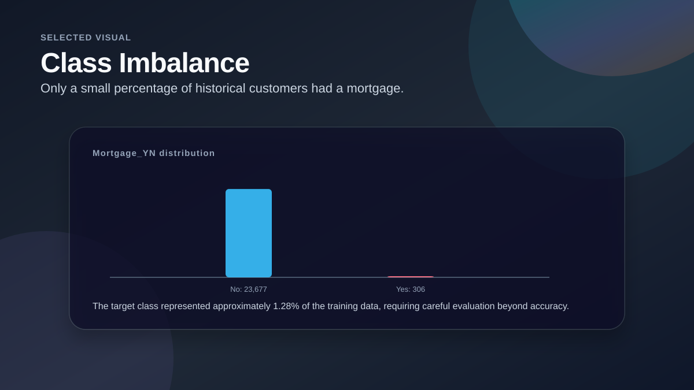
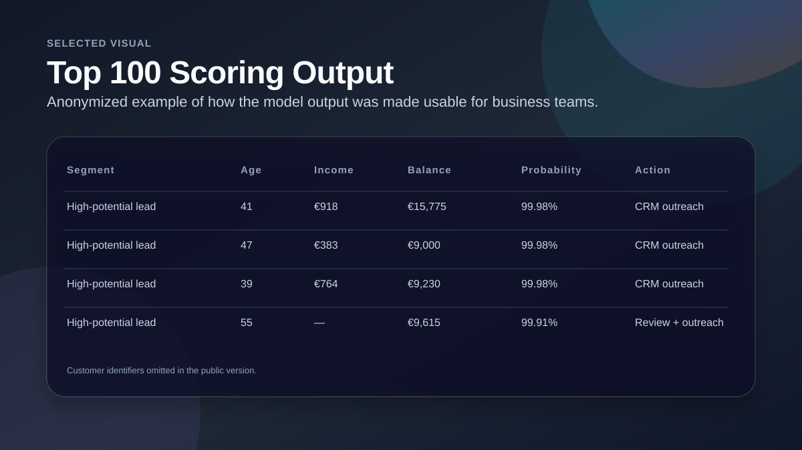

Customer Targeting with Predictive Analytics
A customer analytics project using historical banking data to score potential customers and identify the strongest leads for mortgage outreach.

Project Snapshot
Business Question
Relationship managers needed a practical way to prioritize which potential customers were most likely to be interested in a mortgage product.
My Analytical Approach
- Performed exploratory analysis on historical customer data.
- Cleaned numeric and categorical variables, handled missing values and transformed skewed variables.
- Addressed a highly imbalanced target variable with resampling.
- Trained and compared classification models and used probability scoring for the potential-customer dataset.
- Prepared business-friendly visuals for the top-scored customer group.
Selected Visuals from the Analysis

Data Pipeline
A simplified view of the end-to-end workflow from raw data to a ranked lead list.

Class Imbalance
The positive class was very small, so model evaluation required more than accuracy.

Top 100 Scoring Output
An anonymized example of how the model output can be presented to business stakeholders.
Key Findings
Strong imbalance
Only 306 of 23,983 historical customers had a mortgage in the challenge dataset, so the model had to be evaluated carefully.
Actionable scoring
The model output was converted into a ranked list, which is more useful for a CRM team than a raw prediction label.
Business interpretation
The final presentation focused on who to approach, what variables describe the top group, and how to validate results with campaign data.
Recommendations / Outcome
Use CRM follow-up
Share the top-scored customers with relationship managers for targeted outreach.
Track campaign response
Collect response data from outreach campaigns and compare predicted probability with real conversion.
Explore segmentation
Use clustering or segmentation to refine messaging for different customer groups.